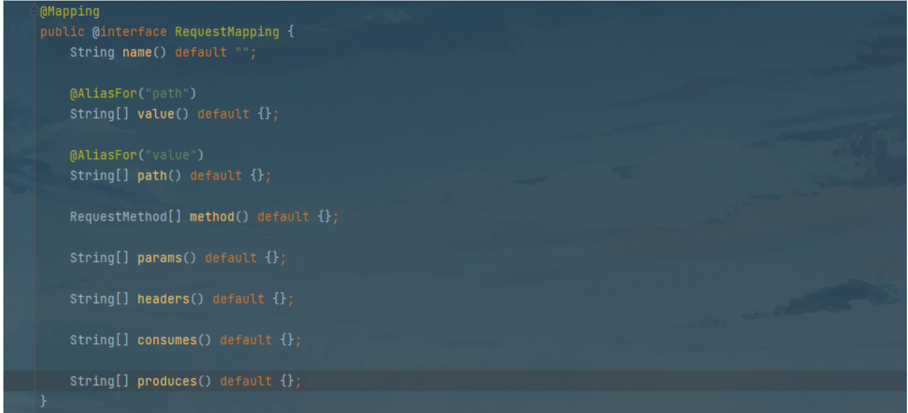
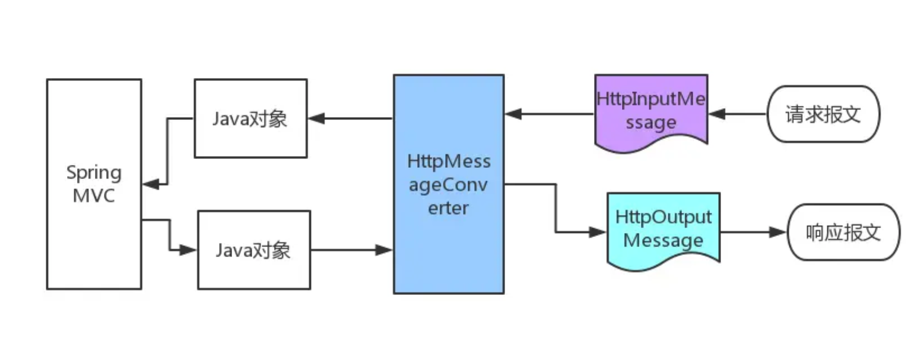
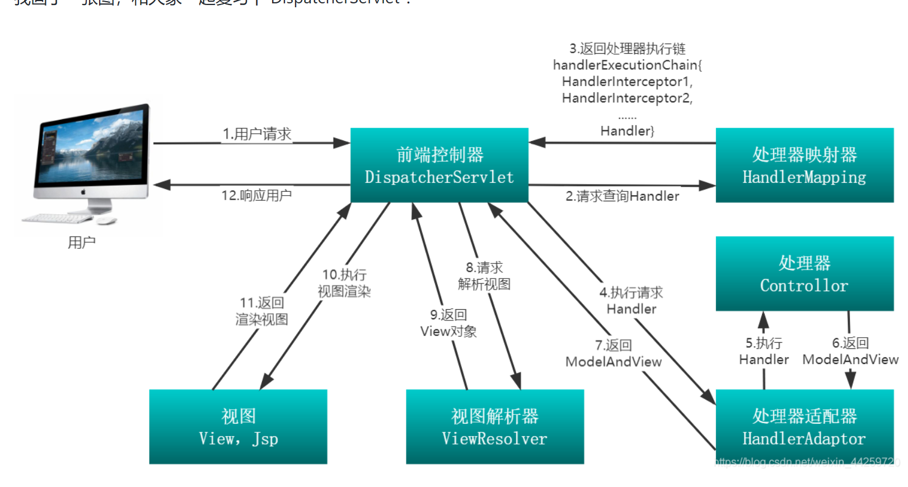

Java 25 - Spring Boot RESTful 接口实现与测试
RESTful 是基于 HTTP 方法的 API 设计风格，通过 URI 暴露资源、HTTP Method 标识操作、HTTP Status Code 标识结果。
核心要点
RESTful 设计原则
- 看 URL 就知道要什么资源
- 看 HTTP Method 就知道针对资源干什么
- 看 HTTP Status Code 就知道结果如何
- URI 中不要出现动词（资源名用名词）
HTTP 四种传参方式
| 方式 | 示例 | Spring 注解 |
|---|---|---|
| Path Info | /articles/12 | @PathVariable |
| URL Query String | /articles?id=12 | @RequestParam |
| Body (multipart) | Content-Type: multipart/form-data | @RequestParam |
| Body (JSON) | Content-Type: application/json | @RequestBody |
| Headers | — | @RequestHeader |
常用注解详解
@RequestBody vs @ResponseBody
@RequestBody— 接收 HTTP Body，默认 JSON 格式@ResponseBody— 返回数据到 HTTP Body，默认 JSON 格式；不加则走视图解析器（页面跳转）
@RestController = @Controller + @ResponseBody
- 注入 Bean 到 Spring 上下文
- 所有
@RequestMapping方法默认返回 JSON 数据
@PathVariable vs @RequestParam
@PathVariable— 用于 URI 模板参数，如@DeleteMapping("/article/{id}")@RequestParam— 接收 query string 或表单参数，缺省会报错（可设required=false）
HttpMessageConverter 机制
HTTP 请求 InputStream → HttpMessageConverter → Java 对象
Java 对象 → HttpMessageConverter → HTTP 响应 OutputStream
集成 Jackson 后，系统根据 Accept / Content-Type 自动选择转换器。可通过 produces 指定响应格式：
@GetMapping(value = "/demo", produces = MediaType.APPLICATION_XML_VALUE)统一响应格式
@Data
public class AjaxResponse {
private boolean isok;
private int code;
private String message;
private Object data;
private AjaxResponse() {}
public static AjaxResponse success() {
AjaxResponse r = new AjaxResponse();
r.setIsok(true);
r.setCode(200);
r.setMessage("请求响应成功!");
return r;
}
public static AjaxResponse success(Object obj) {
AjaxResponse r = success();
r.setData(obj);
return r;
}
}完整 CRUD 示例
@Slf4j
@RestController
@RequestMapping("/rest")
public class ArticleController {
@GetMapping("/article/{id}")
public AjaxResponse getArticleById(@PathVariable Long id) {
Article article = Article.builder()
.id(id).author("lombok")
.content("你好 spring boot")
.createTime(new Date())
.title("day01").build();
return AjaxResponse.success(article);
}
@PostMapping("/articles")
public AjaxResponse saveArticle(@RequestBody Article article,
@RequestHeader String aaa) {
log.info("saveArticle:" + article);
return AjaxResponse.success();
}
@PutMapping("/articles")
public AjaxResponse updateArticle(@RequestBody Article article) {
if (article.getId() == null) {
// 抛出自定义异常
}
log.info("updateArticle:" + article);
return AjaxResponse.success();
}
@DeleteMapping("/articles/{id}")
public AjaxResponse deleteArticle(@PathVariable Long id) {
log.info("deleteArticle:" + id);
return AjaxResponse.success();
}
}Axios 传参方式
| 后端注解 | Axios 方式 | 说明 |
|---|---|---|
@RequestParam | params: { key: val } | 自动格式化为 x-www-form-urlencoded |
@RequestParam | new FormData() + data | 手动构建 FormData |
@RequestParam | qs.stringify() + data | 需设置 Content-Type Header |
@RequestBody | data: { key: val } | 默认 JSON 格式 |
Jackson 注解与配置
@JsonPropertyOrder(value = {"content", "title"})
public class Article {
@JsonIgnore
private Long id;
@JsonProperty("auther")
private String author;
@JsonInclude(JsonInclude.Include.NON_NULL)
@JsonFormat(pattern = "yyyy-MM-dd HH:mm:ss", timezone = "GMT+8")
private Date createTime;
}全局配置（YAML）：
spring:
jackson:
date-format: yyyy-MM-dd HH:mm:ss
time-zone: GMT+8
serialization:
indent_output: false
fail_on_empty_beans: false
defaultPropertyInclusion: NON_EMPTY
deserialization:
fail_on_unknown_properties: false全局配置（代码）：
@Bean
@Primary
@ConditionalOnMissingBean(ObjectMapper.class)
public ObjectMapper jacksonObjectMapper(Jackson2ObjectMapperBuilder builder) {
ObjectMapper objectMapper = builder.createXmlMapper(false).build();
objectMapper.setSerializationInclusion(JsonInclude.Include.NON_EMPTY);
objectMapper.configure(DeserializationFeature.FAIL_ON_UNKNOWN_PROPERTIES, false);
objectMapper.configure(JsonParser.Feature.ALLOW_UNQUOTED_CONTROL_CHARS, true);
objectMapper.configure(JsonParser.Feature.ALLOW_SINGLE_QUOTES, true);
return objectMapper;
}JSON 库对比
| 库 | 特点 | 建议 |
|---|---|---|
| Jackson（Spring 默认） | 各方面均衡 | ⭐ 首选，不建议替换 |
| Gson（Google） | 结构简单，toJson/fromJson | 可选 |
| FastJSON（阿里） | 序列化速度快，但代码质量低、有安全漏洞 | ❌ 不推荐 |
测试：JUnit + MockMvc
轻量级测试（MockMvcBuilders，不启动 Servlet 容器）：
@Slf4j
public class ArticleRestControllerTest {
private static MockMvc mockMvc;
@BeforeAll
static void setUp() {
mockMvc = MockMvcBuilders.standaloneSetup(new ArticleController()).build();
}
@Test
public void saveArticle() throws Exception {
String article = "{\"id\":1,\"author\":\"xhl\",\"title\":\"test\",\"content\":\"c\"}";
MvcResult result = mockMvc.perform(
MockMvcRequestBuilders
.request(HttpMethod.POST, "/rest/article")
.contentType("application/json")
.content(article)
)
.andExpect(MockMvcResultMatchers.status().isOk())
.andExpect(MockMvcResultMatchers.jsonPath("$.data.author").value("xhl"))
.andDo(print())
.andReturn();
}
}Spring 容器级测试（@SpringBootTest）：
@AutoConfigureMockMvc
@SpringBootTest
public class ArticleRestControllerTest {
@Resource
private MockMvc mockMvc;
@MockBean
private ArticleService articleService;
@Test
public void saveArticle() throws Exception {
// 打桩
when(articleService.saveArticle(any())).thenReturn("ok");
MvcResult result = mockMvc.perform(
MockMvcRequestBuilders
.request(HttpMethod.POST, "/rest/article")
.contentType("application/json")
.content(articleJson)
)
.andExpect(MockMvcResultMatchers.jsonPath("$.data").value("ok"))
.andReturn();
}
}
@WebMvcTest(ArticleController.class)比@SpringBootTest更快，只加载 Controller 层 Bean。
Swagger2 整合
<dependency>
<groupId>io.springfox</groupId>
<artifactId>springfox-swagger2</artifactId>
<version>2.6.1</version>
</dependency>@Configuration
@EnableSwagger2
public class Swagger2Config {
@Bean
public Docket createRestApi() {
return new Docket(DocumentationType.SWAGGER_2)
.apiInfo(apiInfo())
.select()
.apis(RequestHandlerSelectors.basePackage("com.demo.Controller"))
.paths(PathSelectors.any())
.build();
}
}生产环境禁用： 使用 @Profile({"dev","test"}) 注解。

↑ @RequestMapping 注解属性图解

↑ HttpMessageConverter 数据转换流程

↑ DispatcherServlet 请求处理流程
来源：鱼皮·编程导航 / codefather